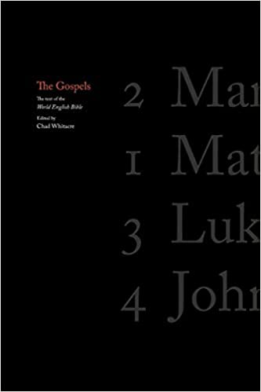

Images

Jesus of Nazareth is a key figure in human culture, generating many, many interpretations of his significance. Was he God? Our greatest spiritual teacher? A lesser prophet? A mystic? A healer? Is he, for better or worse, a figment of imagination? What, if anything, does he mean for our own lives, for our communities, our countries, and our civilization?
The four Gospels of Mark, Matthew, Luke, and John are our best primary sources of information about Jesus, giving us four distinct yet related perspectives on his life. The Gospels are usually embedded in the New Testament of the Christian Bible, which gives them additional context at the cost of accessiblity. Here they are offered in a unique edition that emphasizes their narrative structure, and Jesus' singular place in human culture. Read the Gospels for yourself. Reach your own conclusions. Read them together with others, and determine what his significance might be for the communities to which you belong.
“A splendid edition of the gospels based on a sound design philosophy”J. Mark Bertrand, Lectio
“It's beautiful. I love the minimal approach, and the solution for navigation is really innovative.” Adam Lewis Greene, creator of Bibliotheca
“An early exemplar of what we can hope will become a much more common practice” Matthew Schmitz, First Things
Sold out.
Binding: Paperback
Page Count: 240
Dimensions: 6.0 x 9.0 x 0.7 inches
Weight: 0.9 pounds
ISBN: 978-09-8515-490-5